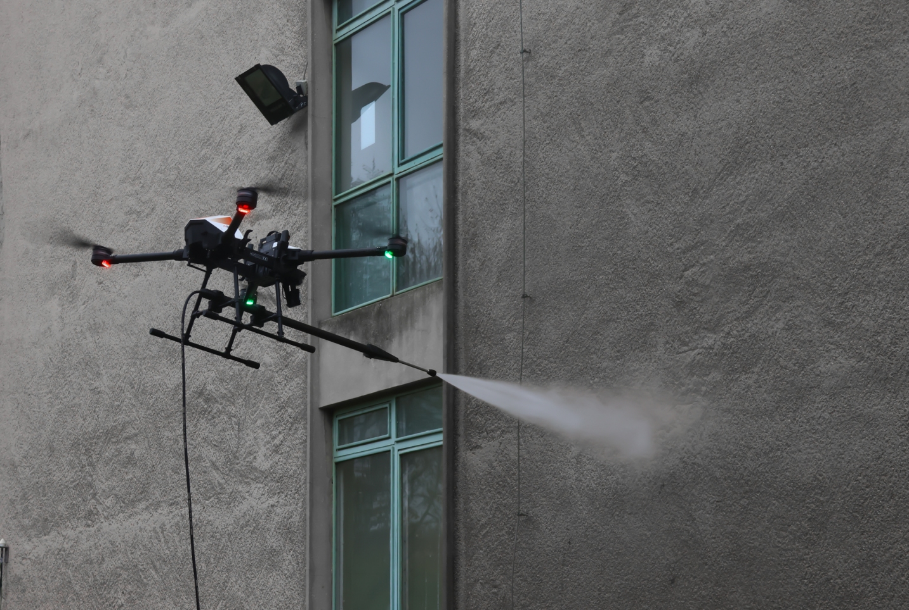
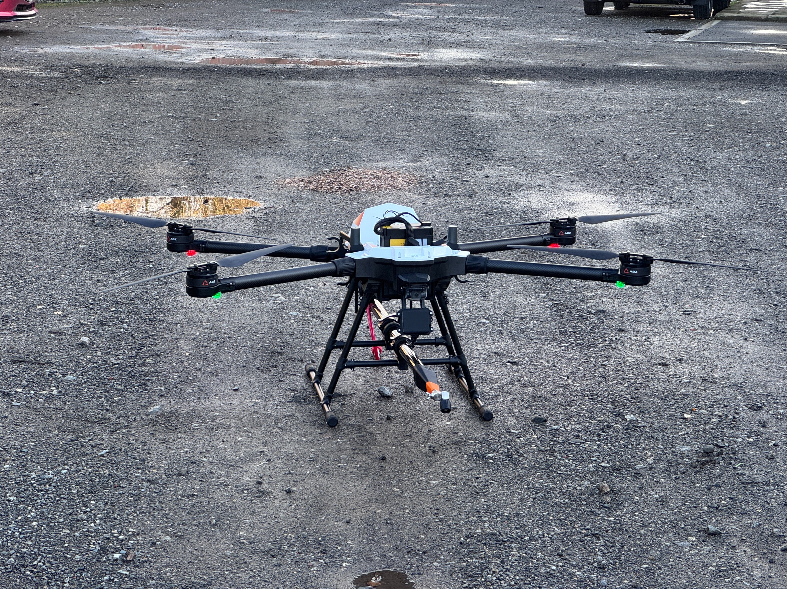
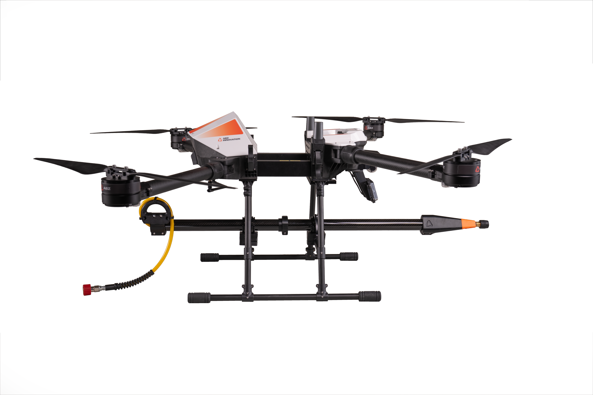
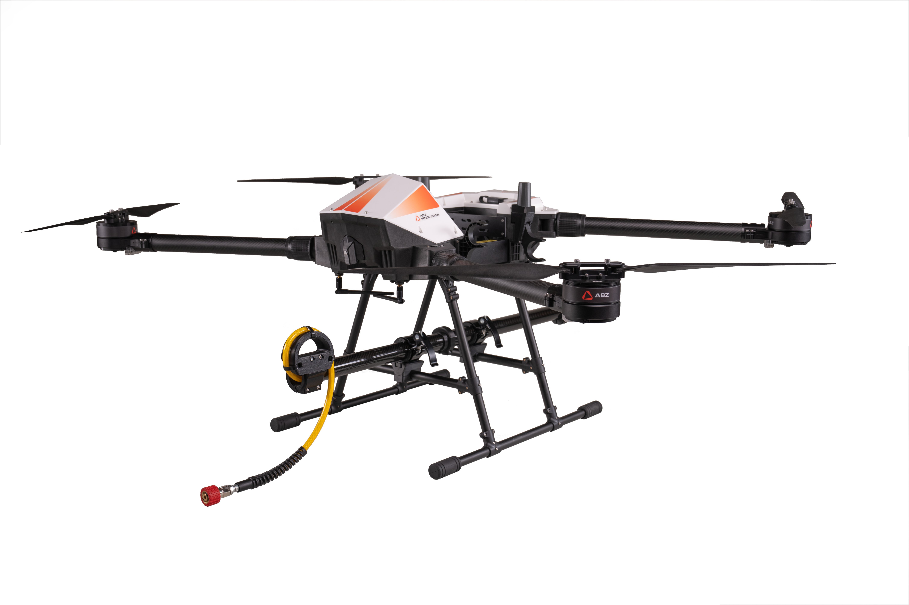
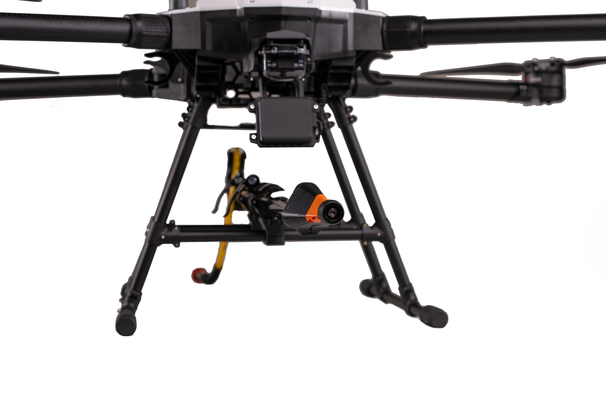
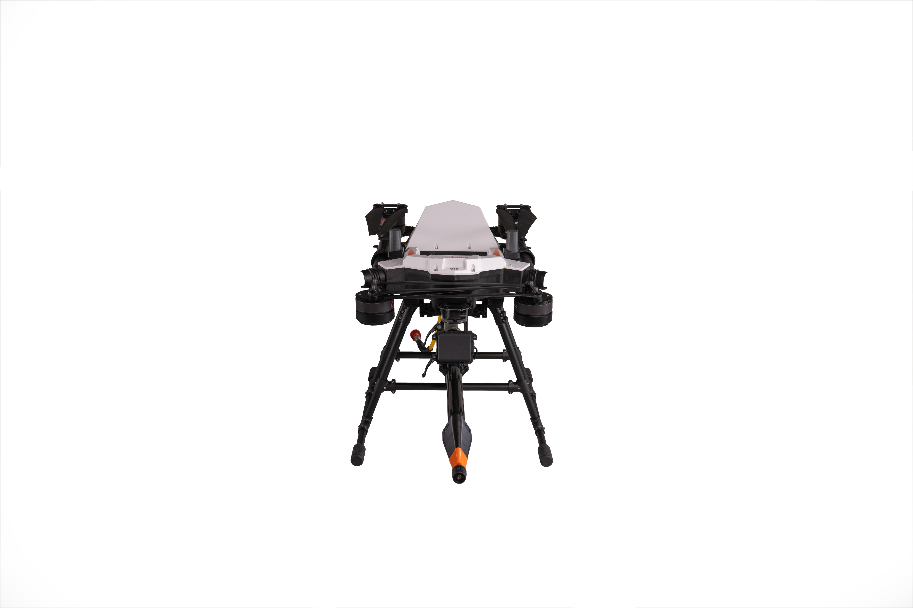

A factory facade was cleaned at around 300 square metres an hour using chemical-free reverse osmosis water.
ABZ Innovation C10
Facade and structure cleaning without access equipment.
Drone cleaning removes the requirement for scaffolding, cradles, powered access or rope teams across a substantial proportion of facade, glazing, cladding and roof maintenance. The work is carried out from ground level, and setup is measured in minutes rather than days.
It does not replace access equipment for every application. We identify where it does not before specifying a system.
ABZ Innovation C10
Applications



- Commercial and residential facades, and glass curtain walling
- Solar farms and rooftop arrays
- Wind turbine towers
- Industrial silos, tanks and cladding
- Heritage and listed structures
- Graffiti removal
- Surface coating and treatment, currently in development
Platform overview
The system
The ABZ Innovation C10 is the platform we have standardised on. It operates to over 60 metres, delivers up to 15 litres per minute at a working pressure around 170 bar at the nozzle, up to 255 bar at peak, and uses radar for collision avoidance and standoff control. Reverse osmosis water can be specified where surface finish, seals or painted surfaces require it.
Maximum take-off mass is 29 kg. The sub 25 kg limit that applied under the earlier authorisation route is not required under UK SORA.




- Working height
- Over 60 metres
- Flow rate
- Up to 15 litres per minute
- Working pressure
- Around 170 bar at the nozzle, up to 255 bar at peak
- Collision avoidance
- Radar, with standoff control
- Maximum take-off mass
- 29 kg
Support from the first conversation
What we supply
The drone, pressure system and nozzle set specified against your surfaces.
Pilot training is available as an additional service, and we can advise on preparing the operations manual and supporting documentation required for CAA authorisation.
Parts are held in the United Kingdom, repairs are carried out in our own workshop, and the enhanced warranty option provides priority servicing and maintenance, with loan equipment where parts are unavailable. We also offer white label services, arranged in advance, giving clients additional capacity.
Operating legally
Cleaning operations at height adjacent to structures fall within the Specific Category, which requires an Operational Authorisation from the Civil Aviation Authority. Since April 2025 these are granted through UK SORA.
The Operational Authorisation is held by the operator and not the supplier. The Bionic Eye assists clients in attaining their own, drawing on the UK SORA authorisation we hold for cleaning operations with our own PowerWash system, obtained in January 2026, and on the applications we have supported since. The first client Operational Authorisation for the C10 has now been granted, in the client's own name, with two further applications at final assessment.
How authorisation worksABZ Innovation case studies
Proven in the field
ABZ Innovation's case studies show what the C10 delivers in service.
A roof carrying ten years of moss, about 550 square metres, was cleared in roughly three hours with no chemicals, and the system was set up and ready to fly in fifteen minutes.
Figures are from ABZ Innovation case studies. Actual output varies with the surface, the level of soiling and site conditions.
C10 video library
C10 Short Low bitrate
C10 facade cleaning
ABZ Clean Station: Full Setup & Operation Guide
C10 Academy
C10 Introduction short
The next step
Closing and enquiry
Send us the sites you intend to work on. We will identify which are straightforward under a standard authorisation, which require additional work, and which are unlikely to be viable, before any commitment is made.